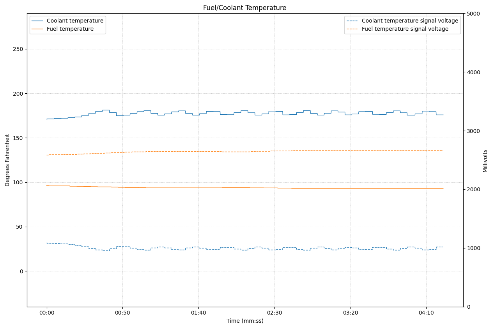

Fuel/Coolant Temperature Chart
This chart displays both fuel temperature and coolant temperature readings.
V2 Bosch system allowed me to also add the sensor voltage for each sensor.

How to Read This Chart
Primary Axis (Left)
- Fuel Temperature - Shows the temperature of the fuel as measured by the fuel temperature sensor
- Coolant Temperature - Shows the engine coolant temperature as measured by the coolant temperature sensor
- Both temperatures are displayed in degrees Fahrenheit (°F)
- Be sure to set your Bobcat Engine Analyzer software to U.S. customary units.
Secondary Axis (V2 only) (Right)
- Sensor Input Voltage - Shows the raw voltage signal from the temperature sensors to the ECU
- Voltage readings help distinguish between actual temperature issues and sensor electrical problems
- Typical sensor voltage range is 0.5V-4.5V depending on temperature and sensor type
Diagnostic Benefits
Temperature vs. Sensor Voltage Analysis
The key diagnostic value of this chart is the ability to differentiate between actual temperature conditions and sensor electrical faults:
Scenario 1: Actual High Temperature
- Temperature reading shows high values (e.g., >230°F coolant)
- Sensor voltage corresponds appropriately to the high temperature
- Both temperature and voltage move together logically
- Conclusion: Genuine overheating condition - focus on cooling system diagnosis
Scenario 2: Sensor Voltage Fault
- Temperature reading shows implausible values (e.g., -40°F or 302°F)
- Sensor voltage is stuck at minimum (~0V) or maximum (~5V)
- Voltage doesn't change with engine operating conditions
- Conclusion: Sensor electrical fault - focus on sensor wiring and sensor replacement
Fault Code Analysis
Temperature-Based Fault Codes
These codes indicate the ECU believes the temperature is actually too high or too low:
- Coolant Temperature High - ECU sees genuine overheating condition
- Fuel Temperature High - Fuel is actually overheating
Sensor Voltage Fault Codes
These codes indicate electrical problems with the sensor circuit:
- Sensor Voltage High - Circuit open, sensor disconnected, or terminal issues
- Sensor Voltage Low - Circuit shorted to ground, sensor failed internally
- Sensor Rationality - Temperature doesn't make sense compared to other engine parameters
Cooling System Fundamentals
Air Flow Effects
Air flow across the radiator/cooler is critical for heat dissipation:
- Cooling Fans - Provide air flow
- Debris Blockage - Dirt, bugs, or debris reduces air flow efficiency
- Ambient Temperature - Hot outside air reduces cooling efficiency
Fluid Flow Effects
Coolant flow through the system determines heat transfer rate:
- Water Pump - Creates flow to move coolant through system at a very specific GPM
- Radiator Flow - Coolant must pass through radiator tubes for heat exchange. Too much flow or too little flow are both bad.
- Thermostat - Controls flow rate based on temperature
Heat Transfer Relationship
Key Principle: Heat transfer requires both fluid flow AND air flow. If either is restricted, temperatures will rise abnormally.
- Poor air flow + good fluid flow = Low temperature drop across cooler. Overheating under load
- Good air flow + poor fluid flow = Excessively high temperature drop across cooler. Overheating at all speeds
- Poor air flow + poor fluid flow = Severe overheating in all conditions
Diagnostic Process
- Verify Fault Conditions - Check if temperatures and voltages are logically related
- Check Air Flow - Inspect radiator for debris, verify fan operation
- Check Fluid Flow - Verify water pump operation, thermostat function
- Electrical Testing - If voltage is implausible, test sensor wiring and resistance
Common Failure Patterns
Thermostat Stuck Closed
- Rapid coolant temperature rise
- Normal sensor voltage behavior
- No heat from cab heater
- Temperature drops quickly when engine is shut off
Thermostat Stuck Open
- Coolant temperature never reaches normal operating range
- Poor fuel economy, increased emissions
- Normal sensor voltage behavior
Sensor Electrical Failure
- Temperature reading stuck at extreme value (-40°F or 302°F)
- Sensor voltage at minimum or maximum range
- No correlation with engine operating conditions
Related Topics